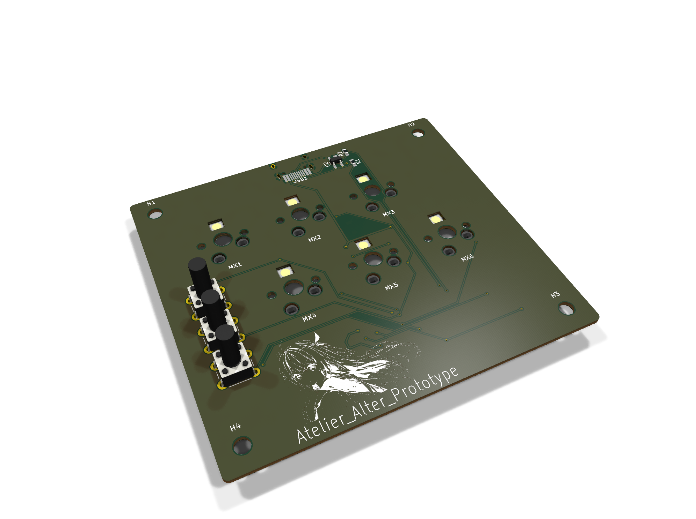
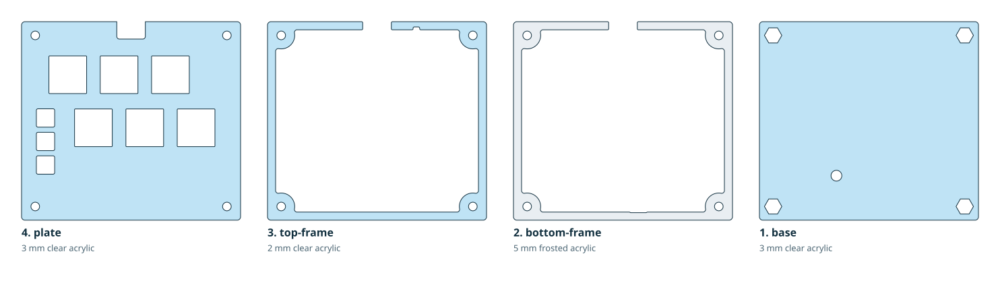
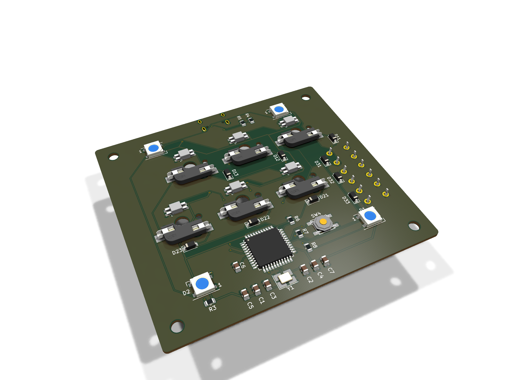
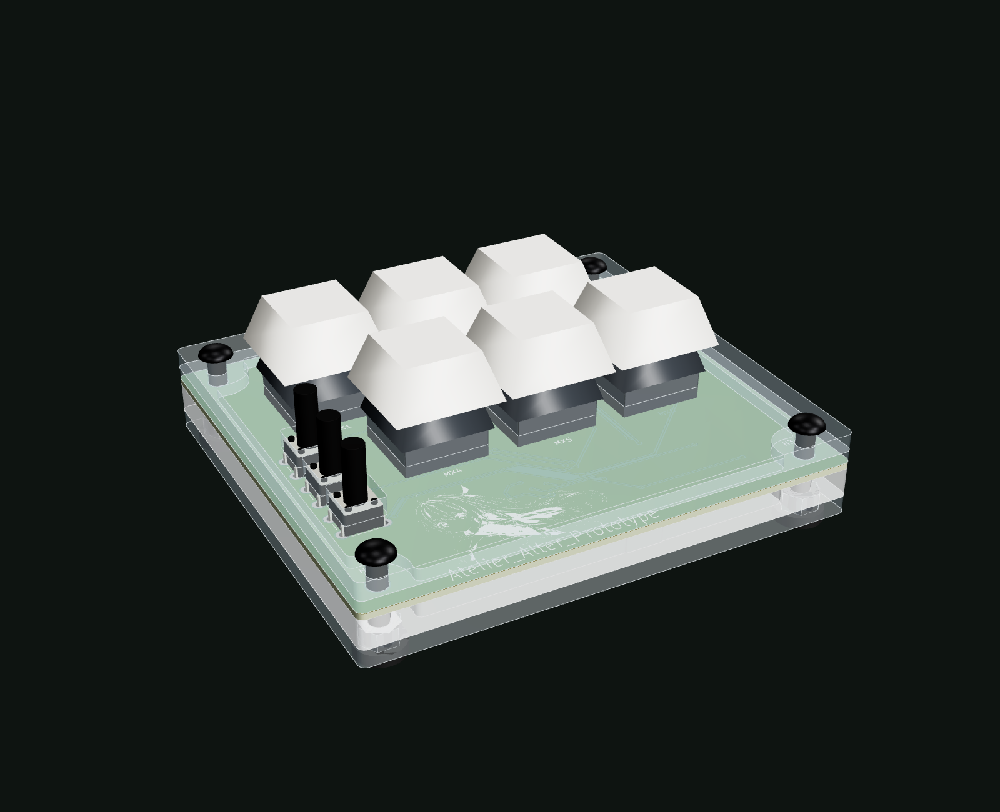

Key matrix
Nine switches in a 3 × 3 matrix with one diode each, scanned on PD1–PD3 and PD5–PD7.
Open hardware · rev 0 · 2022
Six hot-swap mechanical switches and three extra buttons on an ATmega32U4 board with USB-C, per-key RGB and underglow, running QMK with VIA.
Explore the board Source files

Drag to rotate, scroll to zoom. Exported straight from the KiCad PCB file.
Four laser-cut layers follow the PCB outline and clamp the board between them with four M3 screws. Drag the slider to pull the stack apart; drag the model to rotate it.
| Layer | Acrylic | Job |
|---|---|---|
| Switch plate | 3 mm clear | Holds the switches; top face 5.0 mm above the PCB |
| Top frame | 2 mm clear | Spacer that sets the switch height |
| PCB | — | Clamped as a layer of the stack |
| Bottom frame | 5 mm frosted | Clears the sockets and spreads the underglow |
| Base | 3 mm clear | Hex pockets hold the M3 nuts; reset hole |

The original KiCad 6 files, rendered in the browser by KiCanvas. Click a part or a net to inspect it; switch between schematic and board with the file list.





Nine switches in a 3 × 3 matrix with one diode each, scanned on PD1–PD3 and PD5–PD7.
5.1 kΩ pull-downs on both CC pins, 22 Ω series resistors and a PRTR5V0U2X for ESD protection.
Six reverse-mount LEDs shine up through the switches; four more light the frosted case frame from below.
QMK with VIA, so keys and lighting can be remapped without reflashing. 1000 Hz polling.
A desk check of rev 0 against the netlist, KiCad 10 ERC/DRC and the firmware. Nothing was measured on hardware.